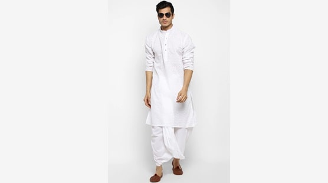

Dhoti and Kurta:
When talking about traditional wear for men in Bihar, a dhoti kurta is one item that cannot be missed. The dhoti is a long rectangular piece of cloth, wrapped around the waist and in between the legs. Generally, it is made from a cotton fabric and found in different shades and designs.